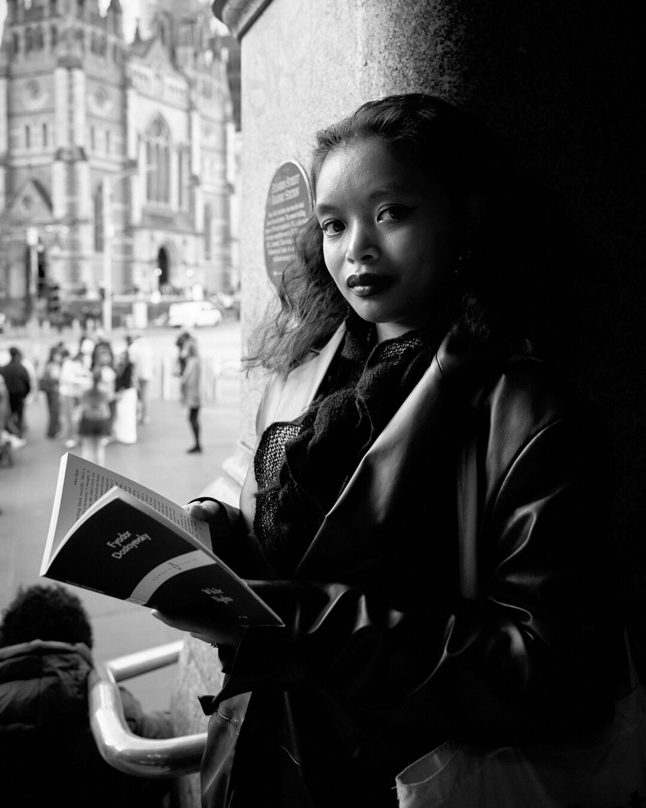

Author | Poet | Lover
Crislin Rosete is currently in her final year studying Creative Writing at the Royal Melbourne Institute of Technology. Prior to her undergraduate studies, she consistently submitted short stories to various youth writing competitions, with which she has been commended and awarded second place for the Williamstown Young Adas Short Story Competition (2021) and Insight's Creative Writing Competition (2022).
Recently, Crislin has been published in the Bowen Street Press's anthology, 'Sunder' (2025), which features the work of students who partook in RMIT's Art/Writing course. She also publishes short stories, poetry and personal essays on her personal Subtack.
Email: rosete.a.crislin@gmail.com